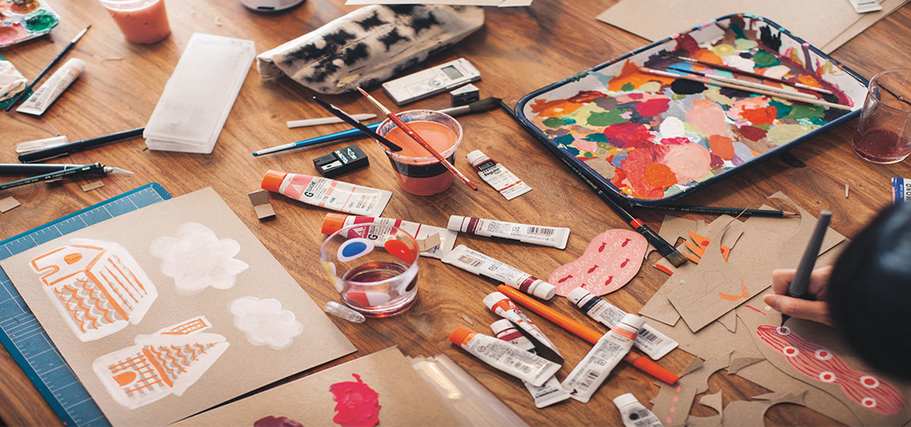

3 Ideas for Getting Creative With Friends
Around here, we always get a burst of creative inspiration when our Instagram feeds light up with a friend’s #ladiesdrawingnight post; the growing trend of group doodling just does it for us. So we were extra-excited to learn that the originators of the phenomenon, a trio of crazy-talented artists, illustrators, and designers who began posting the products of their own social drawing sessions back in 2012, had joined forces to document their experiences inside a beautiful softcover book: Ladies Drawing Night: Make Art, Get Inspired, Join the Party (Chronicle Books, $27.50).
In the book, Julia Rothman, Leah Goren, and Rachael Cole give us a glimpse into some of their favorite themed art nights, sharing their serendipitous discoveries and hands-on insights alongside recommendations for materials and detailed guidance for approaching each theme in your own communal draw-a-thon.
They also make a compelling case for hopping on this particular bandwagon, whether you and your friends are artistically inclined or not. “These evenings are set times for us to relax, chat and explore new ideas outside of our day jobs,” Julia says. “We offer each other suggestions, share supplies, and there is no judgment among us, even if our drawings don’t always turn out perfectly! These nights also give us a chance to catch up with each other and talk about what’s going on in our lives, and we always have snacks and wine to help us along. Each night ends with us feeling inspired and recharged, if a bit sleepy!”
To help you get started — and ease any amateur’s intimidation — Julia has dreamed up five beginner-friendly prompts just for you. “We often pick a theme for our own evenings,” she says. “It can be loose or very specific, but without one, we’d often say to each other, ‘I don’t know what to draw tonight.’ It’s also a fascinating way to see how artists interpret ideas differently.”
Read on for five ideas to draw at home tonight:
Build a Still Life
“Ask each attendee to bring along an object of their choice,” Julia says. “Place each item in the middle of the working space in an appealing grouping where the objects interact from every angle. Seat the guests around the objects so they each have a different point of view. What’s exciting about this exercise is that everyone brings an object they would like to draw, and that varies greatly between people, forcing you to render objects you don’t normally draw. It also opens up many conversations about why each person chose their objects.”
Cut and Pass
“Each participant brings a range of papers of all kinds (colored, gridded, magazine pages, old tickets, etc.) and places them in a pile in the middle of the table. Then everyone starts cutting shapes out of the papers and placing the cut shapes into another pile. Once all the paper has been cut, each guest starts using those pieces to make collages. It will be inspiring to work with shapes you didn’t cut.”
Try Abstract
“Often we are very concerned with representing our real world, so it’s good to force yourself to just think about shapes or lines once in a while. While depicting a figure or space correctly is often the first concern, now composition, color, and mark-making take priority. We suggest working on a few drawings at once — this way, none is so precious and you can go back and forth between each of them with fresh eyes to see what would make them better.”